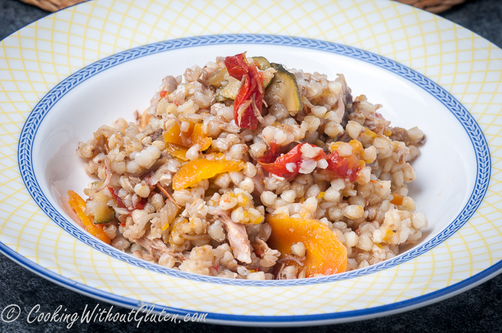

Buckwheat with chicken and vegetables
Decription
Buckwheat kernels, both raw or brown, are used as a base, with some meat as a protein, supplemented with variety of vegetables. To increase a nutrition value of the dish, I use chicken stock as liquid ingredient. However, boiling water can be used instead. For protein ingredient I use chicken, lean pork, turkey or deboned lamb shanks. The first three could be used both raw or cooked, while lamb shanks I always cook beforehand. As I make this dish on regular basis it is much easier to have chicken or any other meat cooked in bulk, portioned and frozen for later use. When cooked for adults, vegetables are sliced and not grated, as I do for children.
Ingredients
- 1 mug buckwheat kernels
- 2 onions
- 2-3 carrots, depending on their size
- pumpkin in quantities equal to carrots
- chicken meat, cooked with stock
- 8-10 cherry tomatoes
- 1 table spoon olive oil
- 1 table spoon coconut oil
- pinch of fennel and caraway seeds
- 1 table spoon of garlic and chilli preserve (homemade)
- sea salt and black pepper for seasoning
Preparation
Chicken and stock
- put sliced and chopped vegetables in a pot: onions, carrots, cauliflower leaves or stalks, any leftovers like green parts of leek, tired tomatoes, etc.
- add 6-8 chicken drumsticks
- cover with cold water
- add seasoning: fennel seeds, garlic and chilli paste, sea salt, fresh thyme
- cook until boiling point and then simmer for 1.5-2 hours
- let the contents of the pot to cool down to just being lukewarm, the longer the process takes place, the softer meat and more flavours in the stock you will get
- separate meat from skin and bones
- put the stock through the sieve
- make desirable portions of meat, covered with stock
- freeze individual portions if necessary
Buckwheat with chicken and vegetables
- heat olive and coconut oil in a pot with thick bottom
- when oil heats up, add fennel and caraway seeds
- add onion, sliced in semi-circles, season with salt and pepper after 1-2 minutes of frying
- reduce heat to low or even minimum and cook until onions become translucent
- add carrots and pumpkin,cherry tomatoes cut in halves or quarters,garlic and chilli preserve (or any other spice mix),chicken meat, it can be added as a frozen block
- if meat added frozen or semi-frozen, cook until it defrosts in the pot, stir all ingredients
- add water, twice the volume of buckwheat (1 cup of buckwheat kernels to 2 cups of liquid), if chicken meat has plenty of liquid in it, take this into consideration
- cook simmering on low heat, covered with lid, until carrots are nearly ready
- add buckwheat, stir
- cook on low to medium heat until the surface looks dry, there is still liquid in the pot and characteristic bubbles appear on top
- cover the pot with a lid, place kitchen towel on top, cover with blanket (I use special cover for the pot. As I use this approach of final cooking in the resting pot often, I knitted myself 2 covers to fit the size of two pots, used for these purposes)
- let the dish rest at least 60-90 minutes
- the residual liquid will be absorbed
- in covered cast iron Dutch oven and similar pots, the dish will stay very warm for 3-4 hours.